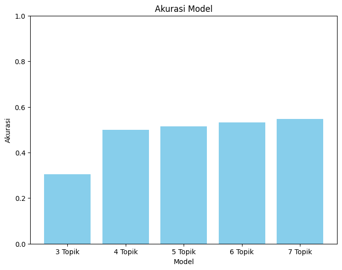

Reduksi Dimensi dengan Menggunakan Latent Dirichlet Allocation (LDA)#
Import library yang diperlukan#
import numpy as np
import sklearn
from sklearn.decomposition import LatentDirichletAllocation
import pandas as pd
import os
%cd /content/
os.mkdir('data_termFreq_skripsi')
/content
import gdown
# download data
nama_data = '/content/data_termFreq_skripsi/data_termFreq_skripsi'
gdown.download(f'https://drive.google.com/uc?id=1pXZyUlrrAMZl_b1Grm4EQUHSaRsd_9L6', nama_data, quiet=False)
Downloading...
From: https://drive.google.com/uc?id=1pXZyUlrrAMZl_b1Grm4EQUHSaRsd_9L6
To: /content/data_termFreq_skripsi/data_termFreq_skripsi
0%| | 0.00/13.1M [00:00<?, ?B/s]
36%|███▌ | 4.72M/13.1M [00:00<00:00, 35.6MB/s]
100%|██████████| 13.1M/13.1M [00:00<00:00, 79.6MB/s]
'/content/data_termFreq_skripsi/data_termFreq_skripsi'
%cd /content/
os.mkdir('data_skripsi')
/content
---------------------------------------------------------------------------
FileExistsError Traceback (most recent call last)
<ipython-input-5-8b0feb0d8b40> in <cell line: 2>()
1 get_ipython().run_line_magic('cd', '/content/')
----> 2 os.mkdir('data_skripsi')
FileExistsError: [Errno 17] File exists: 'data_skripsi'
import gdown
# download data
nama_data = '/content/data_skripsi/data_skripsi.csv'
gdown.download(f'https://drive.google.com/uc?id=1iJWlWqGNROHiBf2qv329gGSkwhYJfVMT', nama_data, quiet=False)
data_skripsi = pd.read_csv('/content/data_skripsi/data_skripsi.csv')
data_skripsi
| Judul | Penulis | Dosen Pembimbing I | Dosen Pembimbing II | Abstrak | Label | |
|---|---|---|---|---|---|---|
| 0 | PERANCANGAN DAN IMPLEMENTASI SISTEM DATABASE ... | A.Ubaidillah S.Kom | Budi Setyono M.T | Hermawan S.T | Sistem informasi akademik (SIAKAD) merupaka... | RPL |
| 1 | APLIKASI KONTROL DAN MONITORING JARINGAN KOMPU... | M. Basith Ardianto, | Drs. Budi Soesilo, MT | Koko Joni, ST | Berjalannya koneksi jaringan komputer dengan l... | RPL |
| 2 | RANCANG BANGUN APLIKASI PROXY SERVER UNTUK ENK... | Akhmad Suyandi, S.Kom | Drs. Budi Soesilo, M.T | Hermawan, ST, MT | Web server adalah sebuah perangkat lunak serve... | RPL |
| 3 | SISTEM PENDUKUNG KEPUTUSAN OPTIMASI PENJADWALA... | Heri Supriyanto | Mulaab, S.Si., M.Kom | Firli Irhamni, ST., M.Kom | Penjadwalan kuliah di Perguruan Tinggi me... | KK |
| 4 | SISTEM AUGMENTED REALITY ANIMASI BENDA BERGERA... | Septian Rahman Hakim | Arik Kurniawati, S.Kom., M.T. | Haryanto, S.T., M.T. | Seiring perkembangan teknologi yang ada diduni... | KK |
| ... | ... | ... | ... | ... | ... | ... |
| 853 | PENERAPAN ALGORITMA LONG-SHORT TERM MEMORY UNT... | Rachmad Agung Pambudi | Eka Mala Sari Rochman, S.Kom., M.Kom | Sri Herawati, S.Kom., M.Kom | Investasi saham selama ini memiliki resiko ker... | KK |
| 854 | SISTEM PENCARIAN TEKS AL-QURAN TERJEMAHAN BERB... | Nadila Hidayanti | Achmad Jauhari, S.T., M.Kom | Ika Oktavia Suzanti, S.Kom., M.Cs | Information Retrieval (IR) merupakan pengambil... | KK |
| 855 | KLASIFIKASI KOMPLEKSITAS VISUAL CITRA SAMPAH M... | Afni Sakinah | Dr. Indah Agustien Siradjuddin, S.Kom., M.Kom. | Moch. Kautsar Sophan, S.Kom., M.MT. | Klasifikasi citra merupakan proses pengelompok... | KK |
| 856 | IDENTIFIKASI BINER ATRIBUT PEJALAN KAKI MENGGU... | Friska Fatmawatiningrum | Dr. Indah Agustien Siradjuddin, S.Kom., M.Kom. | Prof. Dr. Arief Muntasa, S.Si., M.MT. | Identifikasi atribut pejalan kaki merupakan sa... | KK |
| 857 | DETEKSI OBJEK MANUSIA BERBASIS ONE STAGE DETEC... | Dian Wibowo | Dr. Indah Agustien Siradjuddin, S.Kom., M.Kom. | Moch. Kautsar Sophan, S.Kom., M.MT. | Topik deteksi objek telah menarik perhatian ya... | KK |
858 rows × 6 columns
label = data_skripsi.iloc[:, 5]
label
0 RPL
1 RPL
2 RPL
3 KK
4 KK
...
853 KK
854 KK
855 KK
856 KK
857 KK
Name: Label, Length: 858, dtype: object
Menampilkan dataframe data term frequensi dari dataset skripsi#
data_TF = pd.read_csv('/content/data_termFreq_skripsi/data_termFreq_skripsi')
data_TF
| stemmed_tokens | aalysis | aam | ab | abad | abadi | abai | abdi | ability | abjad | ... | zara | zat | zcz | zf | zona | zone | zoning | zoom | zucara | zungu | |
|---|---|---|---|---|---|---|---|---|---|---|---|---|---|---|---|---|---|---|---|---|---|
| 0 | Sistem informasi akademik (SIAKAD) merupaka... | 0 | 0 | 0 | 0 | 0 | 0 | 0 | 0 | 0 | ... | 0 | 0 | 0 | 0 | 0 | 0 | 0 | 0 | 0 | 0 |
| 1 | Berjalannya koneksi jaringan komputer dengan l... | 0 | 0 | 0 | 0 | 0 | 0 | 0 | 0 | 0 | ... | 0 | 0 | 0 | 0 | 0 | 0 | 0 | 0 | 0 | 0 |
| 2 | Web server adalah sebuah perangkat lunak serve... | 0 | 0 | 0 | 0 | 0 | 0 | 0 | 0 | 0 | ... | 0 | 0 | 0 | 0 | 0 | 0 | 0 | 0 | 0 | 0 |
| 3 | Penjadwalan kuliah di Perguruan Tinggi me... | 0 | 0 | 0 | 0 | 0 | 0 | 0 | 0 | 0 | ... | 0 | 0 | 0 | 0 | 0 | 0 | 0 | 0 | 0 | 0 |
| 4 | Seiring perkembangan teknologi yang ada diduni... | 0 | 0 | 0 | 0 | 0 | 0 | 0 | 0 | 0 | ... | 0 | 0 | 0 | 0 | 0 | 0 | 0 | 0 | 0 | 0 |
| ... | ... | ... | ... | ... | ... | ... | ... | ... | ... | ... | ... | ... | ... | ... | ... | ... | ... | ... | ... | ... | ... |
| 853 | Investasi saham selama ini memiliki resiko ker... | 0 | 0 | 0 | 0 | 0 | 0 | 0 | 0 | 0 | ... | 0 | 0 | 0 | 0 | 0 | 0 | 0 | 0 | 0 | 0 |
| 854 | Information Retrieval (IR) merupakan pengambil... | 0 | 0 | 0 | 0 | 0 | 0 | 0 | 0 | 0 | ... | 0 | 0 | 0 | 0 | 0 | 0 | 0 | 0 | 0 | 0 |
| 855 | Klasifikasi citra merupakan proses pengelompok... | 0 | 0 | 0 | 0 | 0 | 0 | 0 | 0 | 0 | ... | 0 | 0 | 0 | 0 | 0 | 0 | 0 | 0 | 0 | 0 |
| 856 | Identifikasi atribut pejalan kaki merupakan sa... | 0 | 0 | 0 | 0 | 0 | 0 | 0 | 0 | 0 | ... | 0 | 0 | 0 | 0 | 0 | 0 | 0 | 0 | 0 | 0 |
| 857 | Topik deteksi objek telah menarik perhatian ya... | 0 | 0 | 0 | 0 | 0 | 0 | 0 | 0 | 0 | ... | 0 | 0 | 0 | 0 | 0 | 0 | 0 | 0 | 0 | 0 |
858 rows × 6954 columns
# mengambil kolom selain kolom pertama untuk mendapatkan kata dari abstrak
tf_data = data_TF.iloc[:, 1:]
tf_data
| aalysis | aam | ab | abad | abadi | abai | abdi | ability | abjad | absah | ... | zara | zat | zcz | zf | zona | zone | zoning | zoom | zucara | zungu | |
|---|---|---|---|---|---|---|---|---|---|---|---|---|---|---|---|---|---|---|---|---|---|
| 0 | 0 | 0 | 0 | 0 | 0 | 0 | 0 | 0 | 0 | 0 | ... | 0 | 0 | 0 | 0 | 0 | 0 | 0 | 0 | 0 | 0 |
| 1 | 0 | 0 | 0 | 0 | 0 | 0 | 0 | 0 | 0 | 0 | ... | 0 | 0 | 0 | 0 | 0 | 0 | 0 | 0 | 0 | 0 |
| 2 | 0 | 0 | 0 | 0 | 0 | 0 | 0 | 0 | 0 | 0 | ... | 0 | 0 | 0 | 0 | 0 | 0 | 0 | 0 | 0 | 0 |
| 3 | 0 | 0 | 0 | 0 | 0 | 0 | 0 | 0 | 0 | 0 | ... | 0 | 0 | 0 | 0 | 0 | 0 | 0 | 0 | 0 | 0 |
| 4 | 0 | 0 | 0 | 0 | 0 | 0 | 0 | 0 | 0 | 0 | ... | 0 | 0 | 0 | 0 | 0 | 0 | 0 | 0 | 0 | 0 |
| ... | ... | ... | ... | ... | ... | ... | ... | ... | ... | ... | ... | ... | ... | ... | ... | ... | ... | ... | ... | ... | ... |
| 853 | 0 | 0 | 0 | 0 | 0 | 0 | 0 | 0 | 0 | 0 | ... | 0 | 0 | 0 | 0 | 0 | 0 | 0 | 0 | 0 | 0 |
| 854 | 0 | 0 | 0 | 0 | 0 | 0 | 0 | 0 | 0 | 0 | ... | 0 | 0 | 0 | 0 | 0 | 0 | 0 | 0 | 0 | 0 |
| 855 | 0 | 0 | 0 | 0 | 0 | 0 | 0 | 0 | 0 | 0 | ... | 0 | 0 | 0 | 0 | 0 | 0 | 0 | 0 | 0 | 0 |
| 856 | 0 | 0 | 0 | 0 | 0 | 0 | 0 | 0 | 0 | 0 | ... | 0 | 0 | 0 | 0 | 0 | 0 | 0 | 0 | 0 | 0 |
| 857 | 0 | 0 | 0 | 0 | 0 | 0 | 0 | 0 | 0 | 0 | ... | 0 | 0 | 0 | 0 | 0 | 0 | 0 | 0 | 0 | 0 |
858 rows × 6953 columns
Proses Latent Dirichlet Allocation (LDA)#
# membuat variable k, alpha dan beta untuk proses LDA
k = 3
alpha = 0.1
beta = 0.2
lda = LatentDirichletAllocation(n_components=k, doc_topic_prior=alpha, topic_word_prior=beta)
lda.fit(tf_data)
LatentDirichletAllocation(doc_topic_prior=0.1, n_components=3,
topic_word_prior=0.2)In a Jupyter environment, please rerun this cell to show the HTML representation or trust the notebook. On GitHub, the HTML representation is unable to render, please try loading this page with nbviewer.org.
LatentDirichletAllocation(doc_topic_prior=0.1, n_components=3,
topic_word_prior=0.2)# mengambil kolom pertama untuk bisa mendapat kolom abstrak
abstrak = data_TF.iloc[:, 0]
abstrak
0 Sistem informasi akademik (SIAKAD) merupaka...
1 Berjalannya koneksi jaringan komputer dengan l...
2 Web server adalah sebuah perangkat lunak serve...
3 Penjadwalan kuliah di Perguruan Tinggi me...
4 Seiring perkembangan teknologi yang ada diduni...
...
853 Investasi saham selama ini memiliki resiko ker...
854 Information Retrieval (IR) merupakan pengambil...
855 Klasifikasi citra merupakan proses pengelompok...
856 Identifikasi atribut pejalan kaki merupakan sa...
857 Topik deteksi objek telah menarik perhatian ya...
Name: stemmed_tokens, Length: 858, dtype: object
# Proporsi topik pada dokumen
proporsi_topik_dokumen = lda.transform(tf_data)
proporsi_topik_dokumen_df = pd.DataFrame(proporsi_topik_dokumen, columns=['Topik 1', 'Topik 2', 'Topik 3'])
proporsi_topik_dokumen_df.insert(0,'Abstrak', abstrak)
proporsi_topik_dokumen_df.insert(4,'Label', label)
proporsi_topik_dokumen_df
| Abstrak | Topik 1 | Topik 2 | Topik 3 | Label | |
|---|---|---|---|---|---|
| 0 | Sistem informasi akademik (SIAKAD) merupaka... | 0.997569 | 0.001215 | 0.001215 | RPL |
| 1 | Berjalannya koneksi jaringan komputer dengan l... | 0.998100 | 0.000950 | 0.000950 | RPL |
| 2 | Web server adalah sebuah perangkat lunak serve... | 0.705705 | 0.293380 | 0.000915 | RPL |
| 3 | Penjadwalan kuliah di Perguruan Tinggi me... | 0.001486 | 0.001486 | 0.997027 | KK |
| 4 | Seiring perkembangan teknologi yang ada diduni... | 0.001201 | 0.001201 | 0.997599 | KK |
| ... | ... | ... | ... | ... | ... |
| 853 | Investasi saham selama ini memiliki resiko ker... | 0.000853 | 0.998294 | 0.000853 | KK |
| 854 | Information Retrieval (IR) merupakan pengambil... | 0.486969 | 0.511801 | 0.001230 | KK |
| 855 | Klasifikasi citra merupakan proses pengelompok... | 0.000636 | 0.306254 | 0.693110 | KK |
| 856 | Identifikasi atribut pejalan kaki merupakan sa... | 0.000774 | 0.262489 | 0.736738 | KK |
| 857 | Topik deteksi objek telah menarik perhatian ya... | 0.001108 | 0.001108 | 0.997785 | KK |
858 rows × 5 columns
# Proporsi kata pada topik
proporsi_kata_topik = lda.components_
proporsi_kata_topik_df = pd.DataFrame(proporsi_kata_topik)
proporsi_kata_topik_df
| 0 | 1 | 2 | 3 | 4 | 5 | 6 | 7 | 8 | 9 | ... | 6943 | 6944 | 6945 | 6946 | 6947 | 6948 | 6949 | 6950 | 6951 | 6952 | |
|---|---|---|---|---|---|---|---|---|---|---|---|---|---|---|---|---|---|---|---|---|---|
| 0 | 0.996482 | 0.2 | 0.200692 | 2.183046 | 2.2 | 1.2 | 3.198645 | 0.2 | 0.200000 | 0.2 | ... | 0.203097 | 0.2 | 1.175595 | 0.2 | 0.207293 | 3.181853 | 4.1825 | 0.2 | 0.2 | 0.2 |
| 1 | 0.403518 | 2.2 | 1.199308 | 0.216377 | 0.2 | 0.2 | 0.200000 | 0.2 | 3.198372 | 1.2 | ... | 2.196903 | 1.2 | 0.224405 | 0.2 | 0.200000 | 0.218147 | 0.2175 | 0.2 | 0.2 | 0.2 |
| 2 | 0.200000 | 0.2 | 0.200000 | 0.200577 | 0.2 | 0.2 | 0.201355 | 1.2 | 0.201628 | 0.2 | ... | 0.200000 | 0.2 | 0.200000 | 16.2 | 8.192707 | 0.200000 | 0.2000 | 3.2 | 1.2 | 1.2 |
3 rows × 6953 columns
K-Means Clustering LDA Topik ke Dokumen#
3 Topik#
from sklearn.cluster import KMeans
x = proporsi_topik_dokumen_df[['Topik 1', 'Topik 2', 'Topik 3']]
y = proporsi_topik_dokumen_df['Label']
from sklearn.preprocessing import LabelEncoder
le = LabelEncoder()
proporsi_topik_dokumen_df['Label'] = le.fit_transform(proporsi_topik_dokumen_df['Label'])
y = le.transform(y)
kmeans = KMeans(n_clusters=2, random_state=0, n_init="auto").fit(x)
kmeans.cluster_centers_
array([[0.53109822, 0.1062059 , 0.36269588],
[0.09372582, 0.83745294, 0.06882124]])
print(kmeans.labels_)
[0 0 0 0 0 1 0 1 0 0 0 1 1 1 0 0 0 1 0 0 0 0 0 0 1 1 1 0 1 1 0 0 0 1 0 0 1
1 0 0 0 1 0 1 0 0 0 0 1 0 0 0 0 0 1 1 0 1 0 0 0 1 0 0 0 1 1 1 1 0 0 0 0 1
0 1 0 1 0 0 0 0 0 0 1 0 0 0 0 0 0 1 0 0 1 0 1 0 1 0 1 1 1 1 1 1 0 0 0 1 1
0 0 0 0 0 1 1 0 1 1 0 0 0 1 1 1 1 1 1 1 1 1 1 1 1 1 0 0 1 1 1 0 1 1 0 0 1
1 0 0 1 0 1 1 0 1 0 1 0 0 1 0 0 0 0 1 1 1 1 0 0 0 0 1 0 0 0 0 0 0 0 0 0 1
1 1 0 1 0 1 0 1 1 1 0 0 0 0 0 1 1 0 1 0 0 0 0 0 0 0 0 0 0 0 0 1 1 1 1 1 1
1 1 0 1 0 1 0 0 1 0 0 0 0 0 0 0 0 0 1 0 0 0 0 0 0 0 0 0 1 0 1 1 1 1 0 0 1
1 0 1 0 1 0 1 1 0 0 0 1 0 0 1 0 1 0 0 0 1 1 1 0 0 1 1 0 1 0 1 0 1 0 0 1 0
0 1 1 0 1 1 0 0 1 1 0 0 1 0 0 0 1 1 0 0 0 1 1 0 0 0 0 0 0 0 0 0 0 0 0 0 0
0 0 0 0 0 1 0 0 0 0 1 0 1 1 0 1 0 0 0 1 0 0 0 1 1 1 0 0 0 0 1 0 0 0 0 1 1
0 0 0 0 0 0 0 0 0 1 0 1 1 0 0 0 0 0 0 0 0 0 0 0 0 0 0 0 0 0 0 1 0 0 0 0 0
0 1 0 0 1 0 0 1 0 0 1 0 0 0 0 1 0 1 0 0 0 0 0 1 1 1 0 1 0 0 0 0 1 1 1 0 0
1 0 0 1 1 0 0 0 0 0 0 0 1 1 1 0 0 1 0 0 0 0 1 0 0 0 0 0 1 0 0 1 1 1 0 0 0
0 0 1 0 1 0 1 1 0 0 0 0 0 1 1 0 0 0 0 0 0 1 0 0 1 0 0 1 0 1 0 1 0 0 0 0 0
0 0 0 0 1 1 1 0 0 0 1 0 0 0 1 1 1 0 0 1 1 0 0 1 0 0 0 0 0 0 0 0 0 1 1 0 1
0 0 0 0 0 1 0 1 0 1 0 0 0 0 0 1 0 0 0 0 0 0 0 0 0 0 1 0 0 0 0 0 0 0 0 1 1
0 1 0 1 0 0 0 0 0 1 0 0 0 0 1 1 0 1 0 0 1 0 0 1 1 0 0 0 0 0 0 0 0 0 0 0 0
1 1 0 0 1 1 1 0 0 0 0 1 0 1 0 1 0 1 0 0 0 0 0 0 0 0 1 1 1 0 0 1 0 0 1 1 1
0 0 0 0 0 1 1 0 0 1 0 0 0 0 0 0 0 1 0 1 0 0 1 0 1 1 0 0 0 1 1 0 0 1 0 0 0
1 0 1 0 1 1 1 0 0 1 0 1 1 1 1 1 1 0 1 0 1 0 0 1 0 1 1 0 0 0 1 0 0 0 1 0 0
1 0 1 0 0 0 0 0 0 0 0 0 0 0 0 1 0 0 0 1 1 1 0 0 1 1 0 1 1 1 1 0 0 1 0 1 0
0 0 0 1 1 1 0 0 1 1 0 0 0 0 0 1 1 1 1 0 1 1 0 0 0 0 0 1 1 1 1 1 1 1 1 1 1
0 0 1 1 0 1 0 0 1 1 1 1 1 0 0 0 1 0 1 1 0 0 1 1 0 1 0 0 0 1 1 1 0 0 1 1 1
1 1 1 1 0 0 0]
proporsi_topik_dokumen_df["kluster"] = kmeans.labels_
proporsi_topik_dokumen_df
| Abstrak | Topik 1 | Topik 2 | Topik 3 | Label | kluster | |
|---|---|---|---|---|---|---|
| 0 | Sistem informasi akademik (SIAKAD) merupaka... | 0.997569 | 0.001215 | 0.001215 | 1 | 0 |
| 1 | Berjalannya koneksi jaringan komputer dengan l... | 0.998100 | 0.000950 | 0.000950 | 1 | 0 |
| 2 | Web server adalah sebuah perangkat lunak serve... | 0.705705 | 0.293380 | 0.000915 | 1 | 0 |
| 3 | Penjadwalan kuliah di Perguruan Tinggi me... | 0.001486 | 0.001486 | 0.997027 | 0 | 0 |
| 4 | Seiring perkembangan teknologi yang ada diduni... | 0.001201 | 0.001201 | 0.997599 | 0 | 0 |
| ... | ... | ... | ... | ... | ... | ... |
| 853 | Investasi saham selama ini memiliki resiko ker... | 0.000853 | 0.998294 | 0.000853 | 0 | 1 |
| 854 | Information Retrieval (IR) merupakan pengambil... | 0.486969 | 0.511801 | 0.001230 | 0 | 1 |
| 855 | Klasifikasi citra merupakan proses pengelompok... | 0.000636 | 0.306254 | 0.693110 | 0 | 0 |
| 856 | Identifikasi atribut pejalan kaki merupakan sa... | 0.000774 | 0.262489 | 0.736738 | 0 | 0 |
| 857 | Topik deteksi objek telah menarik perhatian ya... | 0.001108 | 0.001108 | 0.997785 | 0 | 0 |
858 rows × 6 columns
labels = kmeans.labels_
# check how many of the samples were correctly labeled
correct_labels = sum(y == labels)
print("Result: %d out of %d samples were correctly labeled." % (correct_labels, y.size))
Result: 262 out of 858 samples were correctly labeled.
akurasi_3 = correct_labels/float(y.size)
print('Accuracy score: {0:0.2f}'. format(correct_labels/float(y.size)))
Accuracy score: 0.31
4 Topik#
# membuat variable k, alpha dan beta untuk proses LDA
k = 4
alpha = 0.1
beta = 0.2
lda = LatentDirichletAllocation(n_components=k, doc_topic_prior=alpha, topic_word_prior=beta)
lda.fit(tf_data)
# mengambil kolom pertama untuk bisa mendapat kolom abstrak
abstrak = data_TF.iloc[:, 0]
# Proporsi topik pada dokumen
proporsi_topik_dokumen_4topik = lda.transform(tf_data)
proporsi_topik_dokumen_df4 = pd.DataFrame(proporsi_topik_dokumen_4topik, columns=['Topik 1', 'Topik 2', 'Topik 3', 'Topik 4'])
proporsi_topik_dokumen_df4.insert(0,'Abstrak', abstrak)
proporsi_topik_dokumen_df4.insert(5,'Label', label)
# k-means
x = proporsi_topik_dokumen_df4[['Topik 1', 'Topik 2', 'Topik 3', 'Topik 4']]
y = proporsi_topik_dokumen_df4['Label']
# rubah label jadi numerik
le = LabelEncoder()
proporsi_topik_dokumen_df4['Label'] = le.fit_transform(proporsi_topik_dokumen_df4['Label'])
y = le.transform(y)
kmeans = KMeans(n_clusters=2, random_state=0, n_init="auto").fit(x)
proporsi_topik_dokumen_df4["kluster"] = kmeans.labels_
labels = kmeans.labels_
# check how many of the samples were correctly labeled
correct_labels = sum(y == labels)
print(proporsi_topik_dokumen_df4)
print("Result: %d out of %d samples were correctly labeled." % (correct_labels, y.size))
akurasi_4 = correct_labels/float(y.size)
print('Accuracy score: {0:0.2f}'. format(correct_labels/float(y.size)))
Abstrak Topik 1 Topik 2 \
0 Sistem informasi akademik (SIAKAD) merupaka... 0.001214 0.001214
1 Berjalannya koneksi jaringan komputer dengan l... 0.000949 0.000949
2 Web server adalah sebuah perangkat lunak serve... 0.205563 0.000914
3 Penjadwalan kuliah di Perguruan Tinggi me... 0.995548 0.001484
4 Seiring perkembangan teknologi yang ada diduni... 0.001199 0.001199
.. ... ... ...
853 Investasi saham selama ini memiliki resiko ker... 0.997444 0.000852
854 Information Retrieval (IR) merupakan pengambil... 0.001229 0.001229
855 Klasifikasi citra merupakan proses pengelompok... 0.000635 0.416387
856 Identifikasi atribut pejalan kaki merupakan sa... 0.000773 0.423476
857 Topik deteksi objek telah menarik perhatian ya... 0.333013 0.664774
Topik 3 Topik 4 Label kluster
0 0.996358 0.001214 1 1
1 0.997153 0.000949 1 1
2 0.000914 0.792608 1 0
3 0.001484 0.001484 0 1
4 0.996402 0.001199 0 1
.. ... ... ... ...
853 0.000852 0.000852 0 1
854 0.001229 0.996313 0 0
855 0.000635 0.582342 0 0
856 0.000773 0.574978 0 0
857 0.001106 0.001107 0 1
[858 rows x 7 columns]
Result: 429 out of 858 samples were correctly labeled.
Accuracy score: 0.50
5 Topik#
# membuat variable k, alpha dan beta untuk proses LDA
k = 5
alpha = 0.1
beta = 0.2
lda = LatentDirichletAllocation(n_components=k, doc_topic_prior=alpha, topic_word_prior=beta)
lda.fit(tf_data)
# mengambil kolom pertama untuk bisa mendapat kolom abstrak
abstrak = data_TF.iloc[:, 0]
# Proporsi topik pada dokumen
proporsi_topik_dokumen_5topik = lda.transform(tf_data)
proporsi_topik_dokumen_df5 = pd.DataFrame(proporsi_topik_dokumen_5topik, columns=['Topik 1', 'Topik 2', 'Topik 3', 'Topik 4', 'Topik 5'])
proporsi_topik_dokumen_df5.insert(0,'Abstrak', abstrak)
proporsi_topik_dokumen_df5.insert(6,'Label', label)
# k-means
x = proporsi_topik_dokumen_df5[['Topik 1', 'Topik 2', 'Topik 3', 'Topik 4']]
y = proporsi_topik_dokumen_df5['Label']
# rubah label jadi numerik
le = LabelEncoder()
proporsi_topik_dokumen_df5['Label'] = le.fit_transform(proporsi_topik_dokumen_df5['Label'])
y = le.transform(y)
kmeans = KMeans(n_clusters=2, random_state=0, n_init="auto").fit(x)
proporsi_topik_dokumen_df5["kluster"] = kmeans.labels_
labels = kmeans.labels_
# check how many of the samples were correctly labeled
correct_labels = sum(y == labels)
print(proporsi_topik_dokumen_df5)
print("Result: %d out of %d samples were correctly labeled." % (correct_labels, y.size))
akurasi_5 = correct_labels/float(y.size)
print('Accuracy score: {0:0.2f}'. format(correct_labels/float(y.size)))
Abstrak Topik 1 Topik 2 \
0 Sistem informasi akademik (SIAKAD) merupaka... 0.001212 0.001212
1 Berjalannya koneksi jaringan komputer dengan l... 0.000948 0.000948
2 Web server adalah sebuah perangkat lunak serve... 0.000913 0.000913
3 Penjadwalan kuliah di Perguruan Tinggi me... 0.001482 0.001482
4 Seiring perkembangan teknologi yang ada diduni... 0.362148 0.001198
.. ... ... ...
853 Investasi saham selama ini memiliki resiko ker... 0.081224 0.000851
854 Information Retrieval (IR) merupakan pengambil... 0.057436 0.001227
855 Klasifikasi citra merupakan proses pengelompok... 0.671694 0.000635
856 Identifikasi atribut pejalan kaki merupakan sa... 0.985134 0.000773
857 Topik deteksi objek telah menarik perhatian ya... 0.368563 0.001105
Topik 3 Topik 4 Topik 5 Label kluster
0 0.001212 0.001213 0.995150 1 1
1 0.000948 0.996208 0.000948 1 1
2 0.569968 0.000913 0.427292 1 0
3 0.001482 0.001482 0.994073 0 1
4 0.001198 0.001198 0.634258 0 1
.. ... ... ... ... ...
853 0.839663 0.077411 0.000851 0 0
854 0.001227 0.001227 0.938882 0 1
855 0.000635 0.326401 0.000635 0 1
856 0.000772 0.012549 0.000772 0 1
857 0.001105 0.628121 0.001105 0 1
[858 rows x 8 columns]
Result: 441 out of 858 samples were correctly labeled.
Accuracy score: 0.51
6 Topik#
# membuat variable k, alpha dan beta untuk proses LDA
k = 6
alpha = 0.1
beta = 0.2
lda = LatentDirichletAllocation(n_components=k, doc_topic_prior=alpha, topic_word_prior=beta)
lda.fit(tf_data)
# mengambil kolom pertama untuk bisa mendapat kolom abstrak
abstrak = data_TF.iloc[:, 0]
# Proporsi topik pada dokumen
proporsi_topik_dokumen_6topik = lda.transform(tf_data)
proporsi_topik_dokumen_df6 = pd.DataFrame(proporsi_topik_dokumen_6topik, columns=['Topik 1', 'Topik 2', 'Topik 3', 'Topik 4', 'Topik 5', 'Topik 6'])
proporsi_topik_dokumen_df6.insert(0,'Abstrak', abstrak)
proporsi_topik_dokumen_df6.insert(7,'Label', label)
# k-means
x = proporsi_topik_dokumen_df6[['Topik 1', 'Topik 2', 'Topik 3', 'Topik 4', 'Topik 5', 'Topik 6']]
y = proporsi_topik_dokumen_df6['Label']
# rubah label jadi numerik
le = LabelEncoder()
proporsi_topik_dokumen_df6['Label'] = le.fit_transform(proporsi_topik_dokumen_df6['Label'])
y = le.transform(y)
kmeans = KMeans(n_clusters=2, random_state=0, n_init="auto").fit(x)
proporsi_topik_dokumen_df6["kluster"] = kmeans.labels_
labels = kmeans.labels_
# check how many of the samples were correctly labeled
correct_labels = sum(y == labels)
print(proporsi_topik_dokumen_df6)
print("Result: %d out of %d samples were correctly labeled." % (correct_labels, y.size))
akurasi_6 = correct_labels/float(y.size)
print('Accuracy score: {0:0.2f}'. format(correct_labels/float(y.size)))
Abstrak Topik 1 Topik 2 \
0 Sistem informasi akademik (SIAKAD) merupaka... 0.826360 0.168797
1 Berjalannya koneksi jaringan komputer dengan l... 0.101521 0.797113
2 Web server adalah sebuah perangkat lunak serve... 0.000913 0.995437
3 Penjadwalan kuliah di Perguruan Tinggi me... 0.183111 0.001480
4 Seiring perkembangan teknologi yang ada diduni... 0.001196 0.001196
.. ... ... ...
853 Investasi saham selama ini memiliki resiko ker... 0.242646 0.000850
854 Information Retrieval (IR) merupakan pengambil... 0.001226 0.631155
855 Klasifikasi citra merupakan proses pengelompok... 0.000635 0.000635
856 Identifikasi atribut pejalan kaki merupakan sa... 0.000772 0.000772
857 Topik deteksi objek telah menarik perhatian ya... 0.001104 0.646337
Topik 3 Topik 4 Topik 5 Topik 6 Label kluster
0 0.001211 0.001211 0.001211 0.001211 1 1
1 0.000947 0.000947 0.098525 0.000947 1 0
2 0.000913 0.000913 0.000912 0.000913 1 0
3 0.001480 0.001480 0.590120 0.222330 0 0
4 0.001196 0.994018 0.001196 0.001196 0 0
.. ... ... ... ... ... ...
853 0.649810 0.000851 0.104992 0.000851 0 0
854 0.001226 0.001226 0.001226 0.363941 0 0
855 0.562583 0.000635 0.434879 0.000635 0 0
856 0.996141 0.000772 0.000772 0.000772 0 0
857 0.232288 0.001104 0.118063 0.001104 0 0
[858 rows x 9 columns]
Result: 457 out of 858 samples were correctly labeled.
Accuracy score: 0.53
7 Topik#
# membuat variable k, alpha dan beta untuk proses LDA
k = 7
alpha = 0.1
beta = 0.2
lda = LatentDirichletAllocation(n_components=k, doc_topic_prior=alpha, topic_word_prior=beta)
lda.fit(tf_data)
# mengambil kolom pertama untuk bisa mendapat kolom abstrak
abstrak = data_TF.iloc[:, 0]
# Proporsi topik pada dokumen
proporsi_topik_dokumen_7topik = lda.transform(tf_data)
proporsi_topik_dokumen_df7 = pd.DataFrame(proporsi_topik_dokumen_7topik, columns=['Topik 1', 'Topik 2', 'Topik 3', 'Topik 4', 'Topik 5', 'Topik 6', 'Topik 7'])
proporsi_topik_dokumen_df7.insert(0,'Abstrak', abstrak)
proporsi_topik_dokumen_df7.insert(8,'Label', label)
# k-means
x = proporsi_topik_dokumen_df7[['Topik 1', 'Topik 2', 'Topik 3', 'Topik 4', 'Topik 5', 'Topik 6', 'Topik 7']]
y = proporsi_topik_dokumen_df7['Label']
# rubah label jadi numerik
le = LabelEncoder()
proporsi_topik_dokumen_df7['Label'] = le.fit_transform(proporsi_topik_dokumen_df7['Label'])
y = le.transform(y)
kmeans = KMeans(n_clusters=2, random_state=0, n_init="auto").fit(x)
proporsi_topik_dokumen_df7["kluster"] = kmeans.labels_
labels = kmeans.labels_
# check how many of the samples were correctly labeled
correct_labels = sum(y == labels)
print(proporsi_topik_dokumen_df7)
print("Result: %d out of %d samples were correctly labeled." % (correct_labels, y.size))
akurasi_7 = correct_labels/float(y.size)
print('Accuracy score: {0:0.2f}'. format(correct_labels/float(y.size)))
Abstrak Topik 1 Topik 2 \
0 Sistem informasi akademik (SIAKAD) merupaka... 0.001209 0.001210
1 Berjalannya koneksi jaringan komputer dengan l... 0.924415 0.000946
2 Web server adalah sebuah perangkat lunak serve... 0.205425 0.195811
3 Penjadwalan kuliah di Perguruan Tinggi me... 0.001477 0.001478
4 Seiring perkembangan teknologi yang ada diduni... 0.992831 0.001195
.. ... ... ...
853 Investasi saham selama ini memiliki resiko ker... 0.000850 0.000850
854 Information Retrieval (IR) merupakan pengambil... 0.001224 0.001224
855 Klasifikasi citra merupakan proses pengelompok... 0.000634 0.000634
856 Identifikasi atribut pejalan kaki merupakan sa... 0.000771 0.000771
857 Topik deteksi objek telah menarik perhatian ya... 0.001103 0.001103
Topik 3 Topik 4 Topik 5 Topik 6 Topik 7 Label kluster
0 0.992743 0.001209 0.001209 0.001209 0.001209 1 0
1 0.070854 0.000946 0.000946 0.000946 0.000946 1 0
2 0.595117 0.000912 0.000912 0.000912 0.000912 1 0
3 0.001477 0.001477 0.001477 0.001477 0.991135 0 0
4 0.001195 0.001195 0.001195 0.001195 0.001195 0 0
.. ... ... ... ... ... ... ...
853 0.000850 0.802868 0.181172 0.012561 0.000850 0 0
854 0.001224 0.001224 0.001224 0.992654 0.001224 0 0
855 0.137702 0.221555 0.245680 0.393161 0.000634 0 0
856 0.000771 0.000771 0.000771 0.995373 0.000771 0 0
857 0.538600 0.230686 0.001103 0.226303 0.001103 0 0
[858 rows x 10 columns]
Result: 469 out of 858 samples were correctly labeled.
Accuracy score: 0.55
Plot Akurasi Topik#
import matplotlib.pyplot as plt
# Contoh data akurasi (misalnya, untuk beberapa model atau eksperimen)
akurasi = [akurasi_3, akurasi_4, akurasi_5, akurasi_6, akurasi_7]
# Label untuk setiap akurasi (opsional)
model_labels = ['3 Topik', '4 Topik', '5 Topik', '6 Topik', '7 Topik']
# Membuat plot
plt.figure(figsize=(8, 6))
plt.bar(model_labels, akurasi, color='skyblue')
plt.xlabel('Model')
plt.ylabel('Akurasi')
plt.title('Akurasi Model')
plt.ylim(0, 1) # Mengatur batas sumbu y jika diperlukan (0-1 untuk akurasi)
# Menampilkan plot
plt.show()

TF IDF DATA#
%cd /content/
os.mkdir('data_TFIDF')
import gdown
# download data
nama_data = '/content/data_TFIDF/data_TFIDF.csv'
gdown.download(f'https://drive.google.com/uc?id=1r4AN5YdXxQ8ailMy5mILMZk7OAKaiVki', nama_data, quiet=False)
data_TFIDF = pd.read_csv('/content/data_TFIDF/data_TFIDF.csv')
data_TFIDF["label abstrak"] = label
data_TFIDF
| Abstrak | aalysis | aam | ab | abad | abadi | abai | abdi | ability | abjad | ... | zat | zcz | zf | zona | zone | zoning | zoom | zucara | zungu | label abstrak | |
|---|---|---|---|---|---|---|---|---|---|---|---|---|---|---|---|---|---|---|---|---|---|
| 0 | sistem informasi akademik siakad sistem inform... | 0.0 | 0.0 | 0.0 | 0.0 | 0.0 | 0.0 | 0.0 | 0.0 | 0.0 | ... | 0.0 | 0.0 | 0.0 | 0.0 | 0.0 | 0.0 | 0.0 | 0.0 | 0.0 | RPL |
| 1 | jalan koneksi jaring komputer lancar ganggu ha... | 0.0 | 0.0 | 0.0 | 0.0 | 0.0 | 0.0 | 0.0 | 0.0 | 0.0 | ... | 0.0 | 0.0 | 0.0 | 0.0 | 0.0 | 0.0 | 0.0 | 0.0 | 0.0 | RPL |
| 2 | web server perangkat lunak server fungsi terim... | 0.0 | 0.0 | 0.0 | 0.0 | 0.0 | 0.0 | 0.0 | 0.0 | 0.0 | ... | 0.0 | 0.0 | 0.0 | 0.0 | 0.0 | 0.0 | 0.0 | 0.0 | 0.0 | RPL |
| 3 | jadwal kuliah guru kompleks masalah variabel t... | 0.0 | 0.0 | 0.0 | 0.0 | 0.0 | 0.0 | 0.0 | 0.0 | 0.0 | ... | 0.0 | 0.0 | 0.0 | 0.0 | 0.0 | 0.0 | 0.0 | 0.0 | 0.0 | KK |
| 4 | iring kembang teknologi dunia muncul teknologi... | 0.0 | 0.0 | 0.0 | 0.0 | 0.0 | 0.0 | 0.0 | 0.0 | 0.0 | ... | 0.0 | 0.0 | 0.0 | 0.0 | 0.0 | 0.0 | 0.0 | 0.0 | 0.0 | KK |
| ... | ... | ... | ... | ... | ... | ... | ... | ... | ... | ... | ... | ... | ... | ... | ... | ... | ... | ... | ... | ... | ... |
| 853 | investasi saham milik resiko rugi dikarenakanp... | 0.0 | 0.0 | 0.0 | 0.0 | 0.0 | 0.0 | 0.0 | 0.0 | 0.0 | ... | 0.0 | 0.0 | 0.0 | 0.0 | 0.0 | 0.0 | 0.0 | 0.0 | 0.0 | KK |
| 854 | information retrieval ir ambil informasi simpa... | 0.0 | 0.0 | 0.0 | 0.0 | 0.0 | 0.0 | 0.0 | 0.0 | 0.0 | ... | 0.0 | 0.0 | 0.0 | 0.0 | 0.0 | 0.0 | 0.0 | 0.0 | 0.0 | KK |
| 855 | klasifikasi citra proses kelompok piksel citra... | 0.0 | 0.0 | 0.0 | 0.0 | 0.0 | 0.0 | 0.0 | 0.0 | 0.0 | ... | 0.0 | 0.0 | 0.0 | 0.0 | 0.0 | 0.0 | 0.0 | 0.0 | 0.0 | KK |
| 856 | identifikasi atribut pejal kaki salah teliti k... | 0.0 | 0.0 | 0.0 | 0.0 | 0.0 | 0.0 | 0.0 | 0.0 | 0.0 | ... | 0.0 | 0.0 | 0.0 | 0.0 | 0.0 | 0.0 | 0.0 | 0.0 | 0.0 | KK |
| 857 | topik deteksi objek tarik perhati kembang tekn... | 0.0 | 0.0 | 0.0 | 0.0 | 0.0 | 0.0 | 0.0 | 0.0 | 0.0 | ... | 0.0 | 0.0 | 0.0 | 0.0 | 0.0 | 0.0 | 0.0 | 0.0 | 0.0 | KK |
858 rows × 6955 columns
x = data_TFIDF.iloc[:, 1:-1]
y = data_TFIDF['label abstrak']
from sklearn.preprocessing import LabelEncoder
le = LabelEncoder()
data_TFIDF['label abstrak'] = le.fit_transform(data_TFIDF['label abstrak'])
y = le.transform(y)
x
| aalysis | aam | ab | abad | abadi | abai | abdi | ability | abjad | absah | ... | zara | zat | zcz | zf | zona | zone | zoning | zoom | zucara | zungu | |
|---|---|---|---|---|---|---|---|---|---|---|---|---|---|---|---|---|---|---|---|---|---|
| 0 | 0.0 | 0.0 | 0.0 | 0.0 | 0.0 | 0.0 | 0.0 | 0.0 | 0.0 | 0.0 | ... | 0.0 | 0.0 | 0.0 | 0.0 | 0.0 | 0.0 | 0.0 | 0.0 | 0.0 | 0.0 |
| 1 | 0.0 | 0.0 | 0.0 | 0.0 | 0.0 | 0.0 | 0.0 | 0.0 | 0.0 | 0.0 | ... | 0.0 | 0.0 | 0.0 | 0.0 | 0.0 | 0.0 | 0.0 | 0.0 | 0.0 | 0.0 |
| 2 | 0.0 | 0.0 | 0.0 | 0.0 | 0.0 | 0.0 | 0.0 | 0.0 | 0.0 | 0.0 | ... | 0.0 | 0.0 | 0.0 | 0.0 | 0.0 | 0.0 | 0.0 | 0.0 | 0.0 | 0.0 |
| 3 | 0.0 | 0.0 | 0.0 | 0.0 | 0.0 | 0.0 | 0.0 | 0.0 | 0.0 | 0.0 | ... | 0.0 | 0.0 | 0.0 | 0.0 | 0.0 | 0.0 | 0.0 | 0.0 | 0.0 | 0.0 |
| 4 | 0.0 | 0.0 | 0.0 | 0.0 | 0.0 | 0.0 | 0.0 | 0.0 | 0.0 | 0.0 | ... | 0.0 | 0.0 | 0.0 | 0.0 | 0.0 | 0.0 | 0.0 | 0.0 | 0.0 | 0.0 |
| ... | ... | ... | ... | ... | ... | ... | ... | ... | ... | ... | ... | ... | ... | ... | ... | ... | ... | ... | ... | ... | ... |
| 853 | 0.0 | 0.0 | 0.0 | 0.0 | 0.0 | 0.0 | 0.0 | 0.0 | 0.0 | 0.0 | ... | 0.0 | 0.0 | 0.0 | 0.0 | 0.0 | 0.0 | 0.0 | 0.0 | 0.0 | 0.0 |
| 854 | 0.0 | 0.0 | 0.0 | 0.0 | 0.0 | 0.0 | 0.0 | 0.0 | 0.0 | 0.0 | ... | 0.0 | 0.0 | 0.0 | 0.0 | 0.0 | 0.0 | 0.0 | 0.0 | 0.0 | 0.0 |
| 855 | 0.0 | 0.0 | 0.0 | 0.0 | 0.0 | 0.0 | 0.0 | 0.0 | 0.0 | 0.0 | ... | 0.0 | 0.0 | 0.0 | 0.0 | 0.0 | 0.0 | 0.0 | 0.0 | 0.0 | 0.0 |
| 856 | 0.0 | 0.0 | 0.0 | 0.0 | 0.0 | 0.0 | 0.0 | 0.0 | 0.0 | 0.0 | ... | 0.0 | 0.0 | 0.0 | 0.0 | 0.0 | 0.0 | 0.0 | 0.0 | 0.0 | 0.0 |
| 857 | 0.0 | 0.0 | 0.0 | 0.0 | 0.0 | 0.0 | 0.0 | 0.0 | 0.0 | 0.0 | ... | 0.0 | 0.0 | 0.0 | 0.0 | 0.0 | 0.0 | 0.0 | 0.0 | 0.0 | 0.0 |
858 rows × 6953 columns
kmeans = KMeans(n_clusters=2, random_state=0, n_init="auto").fit(x)
kmeans.cluster_centers_
array([[ 2.65450271e-04, 3.34071361e-04, 2.35332335e-04, ...,
-1.62630326e-18, 2.43945489e-19, 2.43945489e-19],
[ 4.60785923e-19, 4.87890978e-19, 1.35525272e-19, ...,
8.10000727e-04, 2.81299809e-04, 2.81299809e-04]])
kmeans_label =kmeans.labels_
data_TFIDF["hasil klustering"] = kmeans_label
data_TFIDF
| Abstrak | aalysis | aam | ab | abad | abadi | abai | abdi | ability | abjad | ... | zcz | zf | zona | zone | zoning | zoom | zucara | zungu | label abstrak | hasil klustering | |
|---|---|---|---|---|---|---|---|---|---|---|---|---|---|---|---|---|---|---|---|---|---|
| 0 | sistem informasi akademik siakad sistem inform... | 0.0 | 0.0 | 0.0 | 0.0 | 0.0 | 0.0 | 0.0 | 0.0 | 0.0 | ... | 0.0 | 0.0 | 0.0 | 0.0 | 0.0 | 0.0 | 0.0 | 0.0 | 1 | 1 |
| 1 | jalan koneksi jaring komputer lancar ganggu ha... | 0.0 | 0.0 | 0.0 | 0.0 | 0.0 | 0.0 | 0.0 | 0.0 | 0.0 | ... | 0.0 | 0.0 | 0.0 | 0.0 | 0.0 | 0.0 | 0.0 | 0.0 | 1 | 1 |
| 2 | web server perangkat lunak server fungsi terim... | 0.0 | 0.0 | 0.0 | 0.0 | 0.0 | 0.0 | 0.0 | 0.0 | 0.0 | ... | 0.0 | 0.0 | 0.0 | 0.0 | 0.0 | 0.0 | 0.0 | 0.0 | 1 | 1 |
| 3 | jadwal kuliah guru kompleks masalah variabel t... | 0.0 | 0.0 | 0.0 | 0.0 | 0.0 | 0.0 | 0.0 | 0.0 | 0.0 | ... | 0.0 | 0.0 | 0.0 | 0.0 | 0.0 | 0.0 | 0.0 | 0.0 | 0 | 1 |
| 4 | iring kembang teknologi dunia muncul teknologi... | 0.0 | 0.0 | 0.0 | 0.0 | 0.0 | 0.0 | 0.0 | 0.0 | 0.0 | ... | 0.0 | 0.0 | 0.0 | 0.0 | 0.0 | 0.0 | 0.0 | 0.0 | 0 | 1 |
| ... | ... | ... | ... | ... | ... | ... | ... | ... | ... | ... | ... | ... | ... | ... | ... | ... | ... | ... | ... | ... | ... |
| 853 | investasi saham milik resiko rugi dikarenakanp... | 0.0 | 0.0 | 0.0 | 0.0 | 0.0 | 0.0 | 0.0 | 0.0 | 0.0 | ... | 0.0 | 0.0 | 0.0 | 0.0 | 0.0 | 0.0 | 0.0 | 0.0 | 0 | 0 |
| 854 | information retrieval ir ambil informasi simpa... | 0.0 | 0.0 | 0.0 | 0.0 | 0.0 | 0.0 | 0.0 | 0.0 | 0.0 | ... | 0.0 | 0.0 | 0.0 | 0.0 | 0.0 | 0.0 | 0.0 | 0.0 | 0 | 1 |
| 855 | klasifikasi citra proses kelompok piksel citra... | 0.0 | 0.0 | 0.0 | 0.0 | 0.0 | 0.0 | 0.0 | 0.0 | 0.0 | ... | 0.0 | 0.0 | 0.0 | 0.0 | 0.0 | 0.0 | 0.0 | 0.0 | 0 | 0 |
| 856 | identifikasi atribut pejal kaki salah teliti k... | 0.0 | 0.0 | 0.0 | 0.0 | 0.0 | 0.0 | 0.0 | 0.0 | 0.0 | ... | 0.0 | 0.0 | 0.0 | 0.0 | 0.0 | 0.0 | 0.0 | 0.0 | 0 | 0 |
| 857 | topik deteksi objek tarik perhati kembang tekn... | 0.0 | 0.0 | 0.0 | 0.0 | 0.0 | 0.0 | 0.0 | 0.0 | 0.0 | ... | 0.0 | 0.0 | 0.0 | 0.0 | 0.0 | 0.0 | 0.0 | 0.0 | 0 | 0 |
858 rows × 6956 columns
labels = kmeans.labels_
# check how many of the samples were correctly labeled
correct_labels = sum(y == labels)
print("Result: %d out of %d samples were correctly labeled." % (correct_labels, y.size))
Result: 650 out of 858 samples were correctly labeled.
print('Accuracy score: {0:0.2f}'. format(correct_labels/float(y.size)))
Accuracy score: 0.76
data_TFIDF.to_csv('TFIDF_data_abstrak_kluster.csv', index=False)